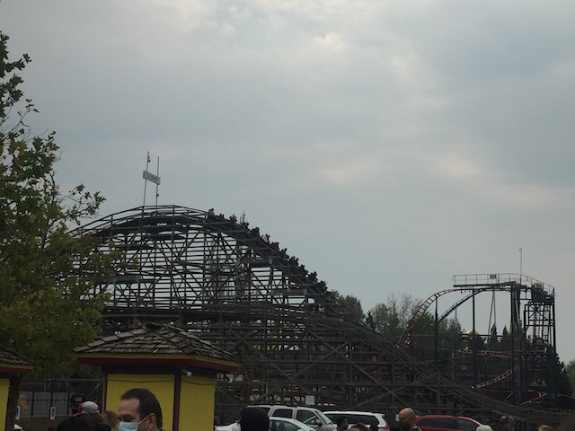
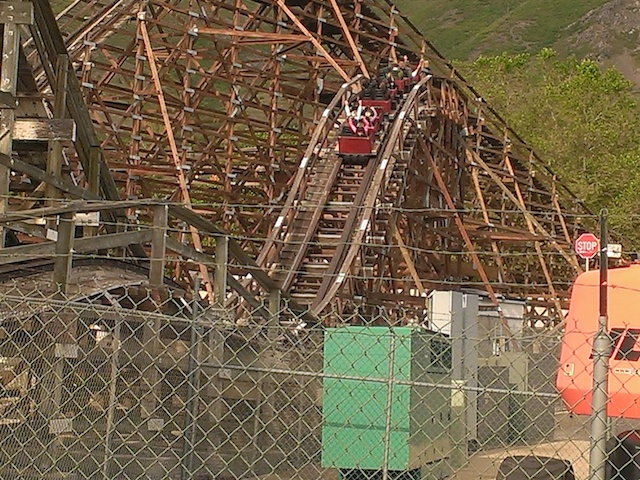
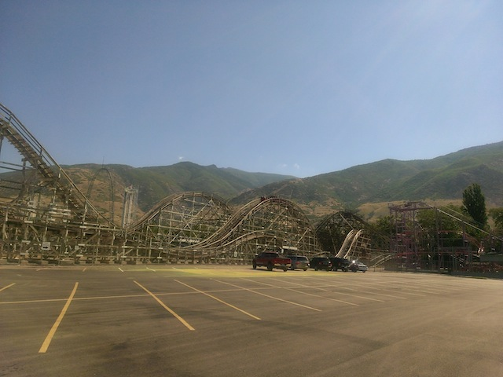
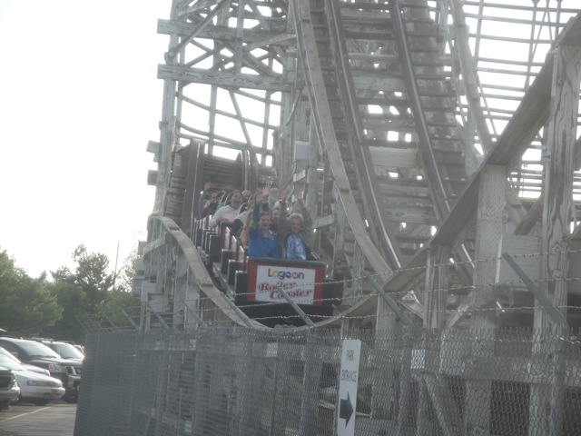
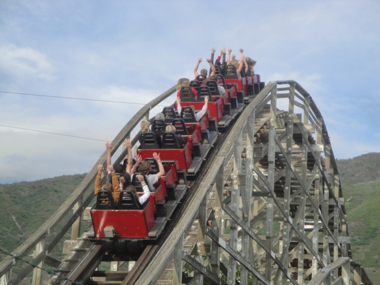
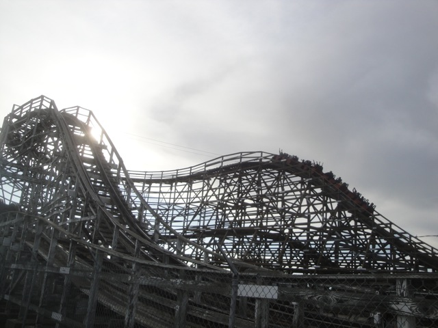
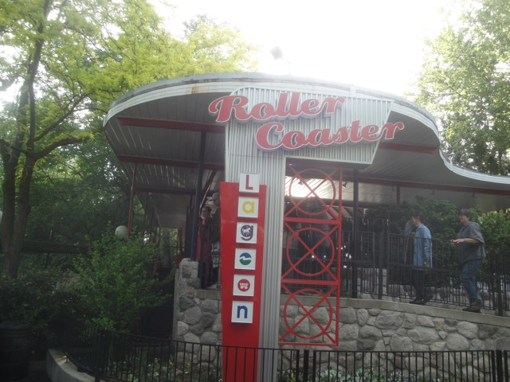

| |
Roller Coaster Review

We're here at Lagoon and todays ride we'll be reviewing is Roller Coaster. I know, very original name. Let's get that joke out of the way. But yeah. Roller Coaster is the parks wooden coaster and while it may not look like anything special, this is actually a really fun little ride. So let's not waste any more time, and hop on board. We get in the trains, pull down the lap bars, and we're off!! We head around a turn and climb up the lifthill, getting a good view of the parking lot as Roller Coaster pretty much just sticks out into the parking lot. But hey. I like that. It gives the parking lot a little more class. And it doesn't seem just randomly plopped there (I'm looking at you Scream). But anyways, lets fast foreward through that. We're at the top and we now head down the first drop. It's not that intense, but you know what? It's a lot of fun. It gives us a nice sense of speed and we're really cruising along now. We head up a small hill. It's not that special, but we do get some nice floater air. Fall back down and rise up another hill. Very fun, and hey. There's a little pop of airtime. We then head around a turnaround. Unlike on some wooden coasters, we still have a little speed during this part of the ride. Not enough for any forces, but still. Enough so that we're not crawling. We then drop back down to the ground. Wee. We head up a small airtime hill. It's not intense, but we get some floater air. Wow, this is much better than I was expecting. We rise up another hill and around another turnaround. Again, we still have some speed. And hey, we get some headchoppers here as we turn underneath the lifthill. We then head down a small drop. And the ride is only going to get better from here. We shred through a tiny little bump before rising up a small little hill and going around another turnaround. Now we actually have enough speed here to get some laterals. And of course, we're right underneath the original turnaround. So we have some very nice headchoppers. We go through a double dip down to the ground and BAM!!! Ejector Air!!! Yeah, those puny little hills that look like speed bumps? They actually have some decent airtime. We head up a small hill, double bump down with some more ejector air. Seriously, your thighs will hit the lap bar. And yeah, we rise up and glide right into the brake run. This is surprisingly a really good wooden coaster. It's not gonna make my Top 10 List or anything like that, but it is a really fun wooden coaster with some nice speed, laterals, and even a little bit of ejector air. And the more I ride it, the better it gets. Yeah, it gets better with age. Yes, I can think of better wooden coasters, but be sure to give Roller Coaster a ride. It's a fun little woodie that blends in beautifully with Lagoon and give you a good ride.
7/10
Location: Lagoon
Opened: 1921
Built by: John A. Miller
Last Ridden: September 19, 2020
Roller Coaster Photos














Home
|